<!DOCTYPE html>
<html lang="en">
  <head>
    <meta charset="utf-8" />
    <meta name="viewport" content="width=device-width, initial-scale=1.0, maximum-scale=1.0, user-scalable=no" />

    <title>Introduction to the AI and LLMs concepts</title>
    <link rel="stylesheet" href="dist/reveal.css" />
    <link rel="stylesheet" href="dist/theme/serif.css" id="theme" />
    <link rel="stylesheet" href="plugin/highlight/monokai.css" />
	<link rel="stylesheet" href="css/layout.css" />
	<link rel="stylesheet" href="plugin/customcontrols/style.css">
	<link rel="stylesheet" href="plugin/chalkboard/style.css">

	<link rel="stylesheet" href="plugin/reveal-pointer/pointer.css" />


    <script defer src="dist/fontawesome/all.min.js"></script>

	<script type="text/javascript">
		var forgetPop = true;
		function onPopState(event) {
			if(forgetPop){
				forgetPop = false;
			} else {
				parent.postMessage(event.target.location.href, "app://obsidian.md");
			}
        }
		window.onpopstate = onPopState;
		window.onmessage = event => {
			if(event.data == "reload"){
				window.document.location.reload();
			}
			forgetPop = true;
		}

		function fitElements(){
			const itemsToFit = document.getElementsByClassName('fitText');
			for (const item in itemsToFit) {
				if (Object.hasOwnProperty.call(itemsToFit, item)) {
					var element = itemsToFit[item];
					fitElement(element,1, 1000);
					element.classList.remove('fitText');
				}
			}
		}

		function fitElement(element, start, end){

			let size = (end + start) / 2;
			element.style.fontSize = `${size}px`;

			if(Math.abs(start - end) < 1){
				while(element.scrollHeight > element.offsetHeight){
					size--;
					element.style.fontSize = `${size}px`;
				}
				return;
			}

			if(element.scrollHeight > element.offsetHeight){
				fitElement(element, start, size);
			} else {
				fitElement(element, size, end);
			}		
		}


		document.onreadystatechange = () => {
			fitElements();
			if (document.readyState === 'complete') {
				if (window.location.href.indexOf("?export") != -1){
					parent.postMessage(event.target.location.href, "app://obsidian.md");
				}
				if (window.location.href.indexOf("print-pdf") != -1){
					let stateCheck = setInterval(() => {
						clearInterval(stateCheck);
						window.print();
					}, 250);
				}
			}
	};


        </script>
  </head>
  <body>
    <div class="reveal">
      <div class="slides"><section ><section data-markdown><script type="text/template"><!-- .slide: class="drop" -->
<div class="" style="position: absolute; left: 0px; top: 0px; height: 900px; width: 1440px; min-height: 900px; display: flex; flex-direction: column; align-items: center; justify-content: center" absolute="true">

## Workshop: LLMs for developers: usage and integration practices
</div></script></section><section data-markdown><script type="text/template"><!-- .slide: class="drop" -->
<div class="" style="position: absolute; left: 0px; top: 0px; height: 900px; width: 1440px; min-height: 900px; display: flex; flex-direction: column; align-items: center; justify-content: center" absolute="true">

## Workshop mentors

<split gap="3">

<div class="block">


Arsen Slyusarchuk
</div>


<div class="block">


Volodymyr Shevchuk
</div>


</split>
</div></script></section><section data-markdown><script type="text/template"><!-- .slide: class="drop" -->
<div class="" style="position: absolute; left: 0px; top: 0px; height: 900px; width: 1440px; min-height: 900px; display: flex; flex-direction: column; align-items: center; justify-content: center" absolute="true">

## Why this course was created?

- **Making AI part of how we work is no longer an option**, but a necessity.​​
- &shy;<!-- .element: class="fragment" data-fragment-index="1" -->Many developers use AI tools, or clients introduce them — but few understand how **they actually work**.​
- &shy;<!-- .element: class="fragment" data-fragment-index="2" -->Result? **Poor outcomes**, tools are used just like fancy autocomplete.​
- &shy;<!-- .element: class="fragment" data-fragment-index="3" -->**Some engineers resist AI** — they don’t see the point.​
- &shy;<!-- .element: class="fragment" data-fragment-index="4" -->Others are **overwhelmed** by the sheer number of tools and **don’t know where to start.​**
- &shy;<!-- .element: class="fragment" data-fragment-index="5" -->Clients are now **actively asking** for AI-powered solutions to real project challenges.​
- &shy;<!-- .element: class="fragment" data-fragment-index="6" -->Clients also expect us to **demonstrate** deep AI **expertise** — and trust us to deliver.​
</div></script></section><section data-markdown><script type="text/template"><!-- .slide: class="drop" data-visibility="hidden" -->
<div class="" style="position: absolute; left: 0px; top: 0px; height: 900px; width: 1440px; min-height: 900px; display: flex; flex-direction: column; align-items: center; justify-content: center" absolute="true">


</div></script></section><section data-markdown><script type="text/template"><!-- .slide: class="drop" -->
<div class="" style="position: absolute; left: 0px; top: 0px; height: 900px; width: 1440px; min-height: 900px; display: flex; flex-direction: column; align-items: center; justify-content: center" absolute="true">

## Course Goals

- Explain how LLMs work in simple terms with vivid examples
- &shy;<!-- .element: class="fragment" data-fragment-index="1" -->Outline the capabilities of modern LLMs and how we can utilize it
- &shy;<!-- .element: class="fragment" data-fragment-index="2" -->Demonstrate how LLMs can accelerate and enhance the development process
- &shy;<!-- .element: class="fragment" data-fragment-index="3" -->Showcase for code-level integration with LLMs based on JavaScript
</div>

<aside class="notes"><p>Prerequisites:</p>
<ul>
<li>Python and JavaScript knowledge on the basic level of syntax understanding.</li>
<li><a href="https://colab.research.google.com/">Google Colab</a> account</li>
<li><a href="https://github.com/">Github</a> account</li>
</ul>
</aside></script></section><section data-markdown><script type="text/template"><!-- .slide: class="drop" -->
<div class="" style="position: absolute; left: 0px; top: 0px; height: 900px; width: 1440px; min-height: 900px; display: flex; flex-direction: column; align-items: center; justify-content: center" absolute="true">

## Disclaimer

This course does not require a background in data engineering. Our focus is to provide developers with a ground-up knowledge of building and integrating LLM solutions
</div></script></section><section data-markdown><script type="text/template"><!-- .slide: class="drop" -->
<div class="" style="position: absolute; left: 0px; top: 0px; height: 900px; width: 1440px; min-height: 900px; display: flex; flex-direction: column; align-items: center; justify-content: center" absolute="true">

### Workshop Overview

- **Module 1:** Introduction to the AI and LLMs concepts <!-- .element: style="color: green" -->
	- &shy;<!-- .element: class="fragment" data-fragment-index="1" -->Part 1: Introduction to the LLM concepts
	- &shy;<!-- .element: class="fragment" data-fragment-index="2" -->Part 2: LLMs like accelerators of the development process
- &shy;<!-- .element: class="fragment" data-fragment-index="3" -->**Module 2:** LLMs architecture, characteristics, parameters; Working with Local LLMS
	- &shy;<!-- .element: class="fragment" data-fragment-index="4" -->Part 1: How LLMs work - architecture details
	- &shy;<!-- .element: class="fragment" data-fragment-index="5" -->Part 2: LLMs parameters and configuration
- &shy;<!-- .element: class="fragment" data-fragment-index="6" -->**Module 3:** Prompt Engineering
- &shy;<!-- .element: class="fragment" data-fragment-index="7" -->**Module 4:** Extending LLM Knowledge with External Data
- &shy;<!-- .element: class="fragment" data-fragment-index="8" -->**Module 5:** Agents. Use LLM to choose a sequence of actions to take
- &shy;<!-- .element: class="fragment" data-fragment-index="9" -->**Module 6:** Evaluate & Trace LLM Application with LangSmith
- &shy;<!-- .element: class="fragment" data-fragment-index="10" -->**Module 7:** Showcase of LLM Integration into JavaScript Project
</div></script></section></section><section ><section data-markdown><script type="text/template"><!-- .slide: class="drop" -->
<div class="" style="position: absolute; left: 0px; top: 0px; height: 900px; width: 1440px; min-height: 900px; display: flex; flex-direction: column; align-items: center; justify-content: center" absolute="true">

## Module 1:  Introduction to AI and LLMs

Agenda

- Introduction to GenAI and LLM concepts
- &shy;<!-- .element: class="fragment" data-fragment-index="1" -->Emergent abilities of LLMs and their limitations
- &shy;<!-- .element: class="fragment" data-fragment-index="2" -->Enhancing developer's productivity with LLM tools and integrations.
- &shy;<!-- .element: class="fragment" data-fragment-index="3" -->ELEKS AI Policy
</div>

<aside class="notes"><p>TODO: update AI policy...
можливо в кінці 2го заняття</p>
</aside></script></section><section data-markdown><script type="text/template"><!-- .slide: class="drop" -->
<div class="" style="position: absolute; left: 0px; top: 0px; height: 900px; width: 1440px; min-height: 900px; display: flex; flex-direction: column; align-items: center; justify-content: center" absolute="true">

### GenAI

<iframe src="https://elekscloud.sharepoint.com/sites/LDO/_layouts/15/embed.aspx?UniqueId=75f9ea34-8736-4e6b-9604-cce073edb231&embed=%7B%22ust%22%3Atrue%2C%22hv%22%3A%22CopyEmbedCode%22%7D&referrer=StreamWebApp&referrerScenario=EmbedDialog.Create" width="1280" height="720" frameborder="0" scrolling="no" allowfullscreen title="LLMs_for_Developers_Intro.mp4"></iframe>
</div></script></section><section data-markdown><script type="text/template"><!-- .slide: class="drop" -->
<div class="" style="position: absolute; left: 0px; top: 0px; height: 900px; width: 1440px; min-height: 900px; display: flex; flex-direction: column; align-items: center; justify-content: center" absolute="true">

### What is GenAI (Generative Artificial Intelligence)

GenAI is a branch of AI that focuses on creating entirely new content. This content can come in many forms, like text, images, music, and videos.


</div></script></section><section data-markdown><script type="text/template"><!-- .slide: class="drop" -->
<div class="" style="position: absolute; left: 0px; top: 0px; height: 900px; width: 1440px; min-height: 900px; display: flex; flex-direction: column; align-items: center; justify-content: center" absolute="true">

### Sora from Open AI


https://sora.chatgpt.com/
</div>

<aside class="notes"><p>Prompt for Sora</p>
<p>Show a cinematic animated scene on Mars: A small solar-powered robot wakes up in the middle of the Martian desert. It unfolds its solar panels, charges in the sunlight, then starts exploring the area. The robot discovers the wreckage of an old spacecraft, scans it with a laser, and sends the data to a satellite. The video should feature smooth camera movements, detailed textures of the Martian landscape, realistic lighting, and a sense of narrative progression.</p>
</aside></script></section><section data-markdown><script type="text/template"><!-- .slide: class="drop" -->
<div class="" style="position: absolute; left: 0px; top: 0px; height: 900px; width: 1440px; min-height: 900px; display: flex; flex-direction: column; align-items: center; justify-content: center" absolute="true">

### midjourney

[midjourney](https://www.midjourney.com/) - Text to image

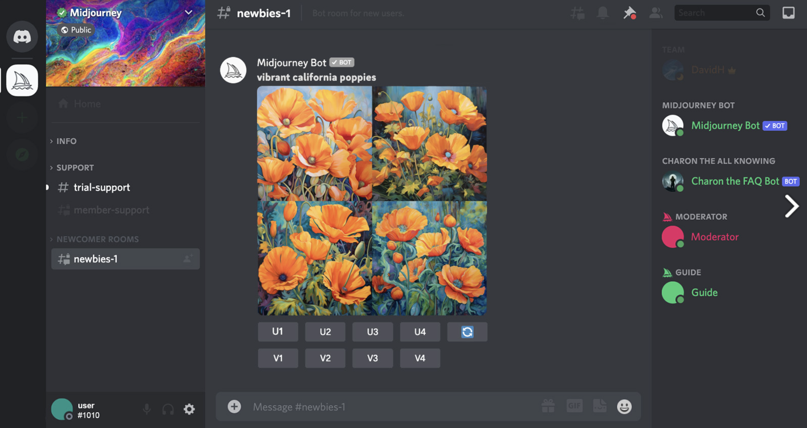
</div>

<aside class="notes"><p>Prompt for Midjourney</p>
<p>Fantasy forest at sunset, sun rays filtering through the trees, mystical atmosphere, ancient temple ruins covered with vines, small fireflies around, calm and mysterious mood, warm color palette with golden, green, and brown tones</p>
</aside></script></section><section data-markdown><script type="text/template"><!-- .slide: class="drop" -->
<div class="" style="position: absolute; left: 0px; top: 0px; height: 900px; width: 1440px; min-height: 900px; display: flex; flex-direction: column; align-items: center; justify-content: center" absolute="true">

### elevenlabs

[elevenlabs](https://elevenlabs.io/) - Text to audio


</div>

<aside class="notes"><p>text: Imagine standing on a quiet beach at dawn, the first rays of sunlight stretching over the horizon. The waves roll in softly, and a gentle breeze whispers through the air, carrying the salty scent of the sea. You close your eyes, taking in the peace and vastness around you, feeling completely at ease. In this moment, everything feels possible.</p>
</aside></script></section><section data-markdown><script type="text/template"><!-- .slide: class="drop" -->
<div class="" style="position: absolute; left: 0px; top: 0px; height: 900px; width: 1440px; min-height: 900px; display: flex; flex-direction: column; align-items: center; justify-content: center" absolute="true">

### videogen

[videogen](https://videogen.io/) - Text to video 

[Demo](https://app.videogen.io/project/95df2113-9db3-4707-b8d1-e529728cb57c)

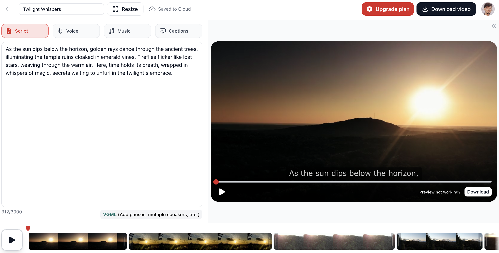
</div></script></section><section data-markdown><script type="text/template"><!-- .slide: class="drop" -->
<div class="" style="position: absolute; left: 0px; top: 0px; height: 900px; width: 1440px; min-height: 900px; display: flex; flex-direction: column; align-items: center; justify-content: center" absolute="true">

### GenAI vs LLMs

GenAI creates entirely new content based on its understanding of data, LLMs retrieve existing content from their data set based on your input.


</div></script></section></section><section ><section data-markdown><script type="text/template"><!-- .slide: class="drop" -->
<div class="" style="position: absolute; left: 0px; top: 0px; height: 900px; width: 1440px; min-height: 900px; display: flex; flex-direction: column; align-items: center; justify-content: center" absolute="true">

## What is LLMs?

**LLMs (Large Language Models)** are AI models trained on massive text data to understand and generate human-like language for tasks like text generation, translation, and question answering.

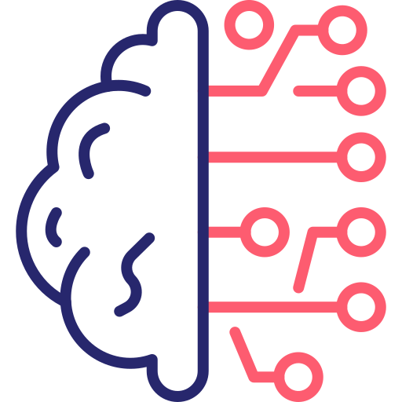
</div></script></section><section data-markdown><script type="text/template"><!-- .slide: class="drop" -->
<div class="" style="position: absolute; left: 0px; top: 0px; height: 900px; width: 1440px; min-height: 900px; display: flex; flex-direction: column; align-items: center; justify-content: center" absolute="true">

### LLMs in the context of AI

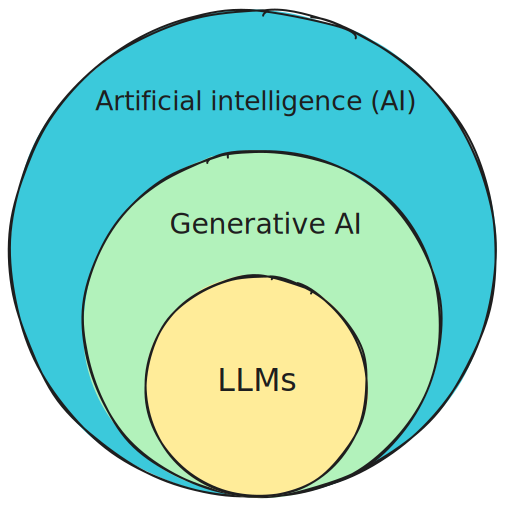
</div></script></section><section data-markdown><script type="text/template"><!-- .slide: class="drop" -->
<div class="" style="position: absolute; left: 0px; top: 0px; height: 900px; width: 1440px; min-height: 900px; display: flex; flex-direction: column; align-items: center; justify-content: center" absolute="true">

## How do LLMs work?


</div></script></section><section data-markdown><script type="text/template"><!-- .slide: class="drop" -->
<div class="" style="position: absolute; left: 0px; top: 0px; height: 900px; width: 1440px; min-height: 900px; display: flex; flex-direction: column; align-items: center; justify-content: center" absolute="true">

### Popular LLM families

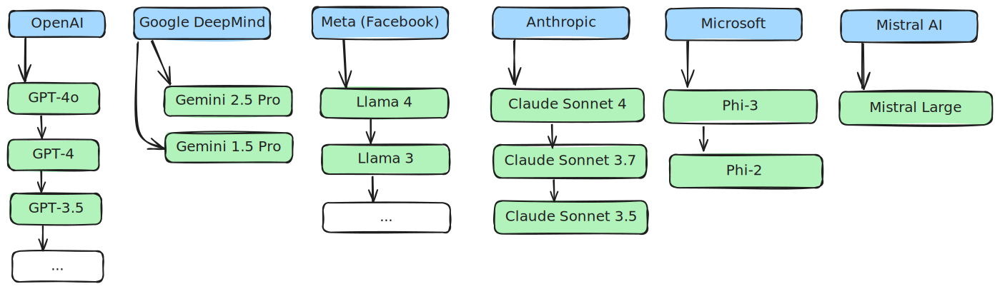
</div></script></section><section data-markdown><script type="text/template"><!-- .slide: class="drop" -->
<div class="" style="position: absolute; left: 0px; top: 0px; height: 900px; width: 1440px; min-height: 900px; display: flex; flex-direction: column; align-items: center; justify-content: center" absolute="true">

### Brief history of LLMs

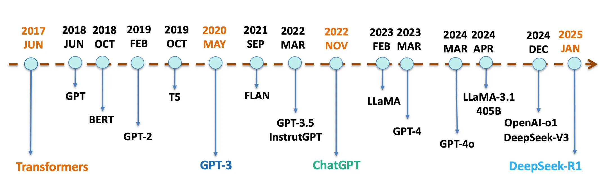
</div></script></section><section data-markdown><script type="text/template"><!-- .slide: class="drop" -->
<div class="" style="position: absolute; left: 0px; top: 0px; height: 900px; width: 1440px; min-height: 900px; display: flex; flex-direction: column; align-items: center; justify-content: center" absolute="true">

### Popular LLM families

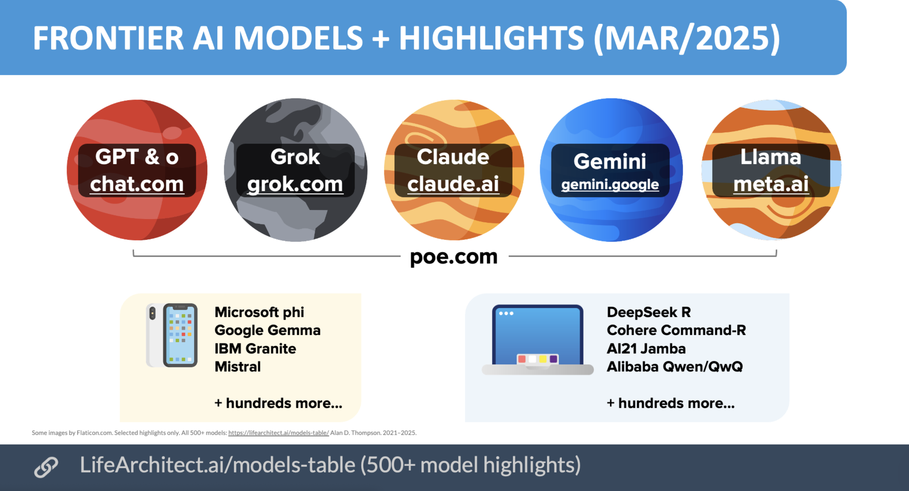
</div></script></section><section data-markdown><script type="text/template"><!-- .slide: class="drop" -->
<div class="" style="position: absolute; left: 0px; top: 0px; height: 900px; width: 1440px; min-height: 900px; display: flex; flex-direction: column; align-items: center; justify-content: center" absolute="true">

### LLMs sizes

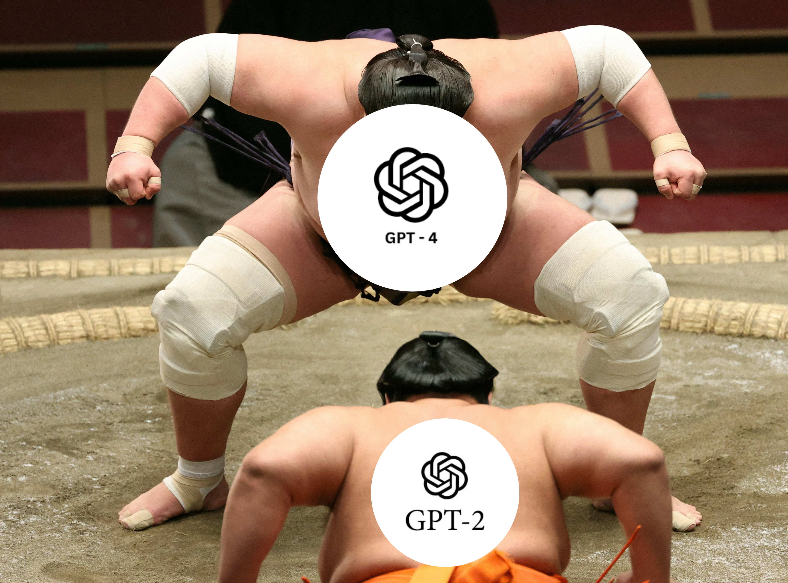
</div></script></section><section data-markdown><script type="text/template"><!-- .slide: class="drop" -->
<div class="" style="position: absolute; left: 0px; top: 0px; height: 900px; width: 1440px; min-height: 900px; display: flex; flex-direction: column; align-items: center; justify-content: center" absolute="true">

### LLMs sizes

- The "size" of a Large Language Model (LLM) typically refers to the number of **parameters** it has.
- **LLaMA 3.2** by Meta is available in versions with **1B, 3B, 11B and 90B parameters**.
- The more parameters a model has, the more complex and powerful it can potentially be, allowing it to understand and generate text with greater nuance.
</div></script></section><section data-markdown><script type="text/template"><!-- .slide: class="drop" -->
<div class="" style="position: absolute; left: 0px; top: 0px; height: 900px; width: 1440px; min-height: 900px; display: flex; flex-direction: column; align-items: center; justify-content: center" absolute="true">

### LLMs sizes


</div></script></section><section data-markdown><script type="text/template"><!-- .slide: class="drop" -->
<div class="" style="position: absolute; left: 0px; top: 0px; height: 900px; width: 1440px; min-height: 900px; display: flex; flex-direction: column; align-items: center; justify-content: center" absolute="true">

### How LLMs understand text: Tokenization

- **Tokens** are the basic units that LLMs process (words, parts of words, punctuation)
- Text is broken down into tokens before processing
- Each model has a **context window** - maximum number of tokens it can process at once


Example: "Hello world!" → ["Hello", " world", "!"] (3 tokens)
</div></script></section><section data-markdown><script type="text/template"><!-- .slide: class="drop" -->
<div class="" style="position: absolute; left: 0px; top: 0px; height: 900px; width: 1440px; min-height: 900px; display: flex; flex-direction: column; align-items: center; justify-content: center" absolute="true">

### Achievements unlocked: Emergent abilities of LLMs


</div></script></section><section data-markdown><script type="text/template"><!-- .slide: class="drop" -->
<div class="" style="position: absolute; left: 0px; top: 0px; height: 900px; width: 1440px; min-height: 900px; display: flex; flex-direction: column; align-items: center; justify-content: center" absolute="true">

### Multimodal LLMs

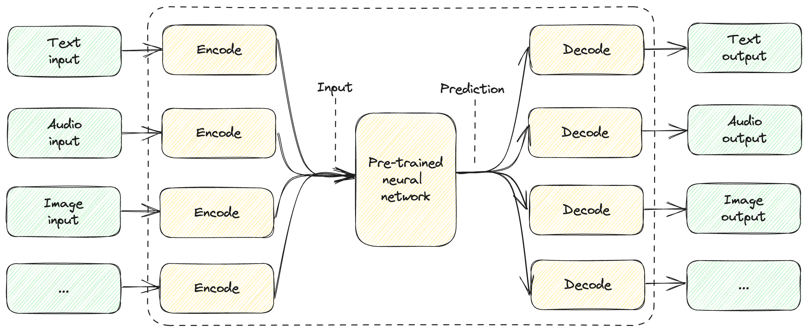
</div></script></section></section><section ><section data-markdown><script type="text/template"><!-- .slide: class="drop" -->
<div class="" style="position: absolute; left: 0px; top: 0px; height: 900px; width: 1440px; min-height: 900px; display: flex; flex-direction: column; align-items: center; justify-content: center" absolute="true">

### LLMs use cases in practice


</div>

<aside class="notes"><ul>
<li>content generation (marketing materials, social media content, technical documentation)<ul>
<li>conversational agents</li>
<li>Knowledge-based agents</li>
<li>basic code generation &amp; code analysis (routine tasks)</li>
<li>personalized learning assistants</li>
<li>sentiment analysis</li>
<li>data analysis</li>
<li>translations</li>
</ul>
</li>
</ul>
</aside></script></section><section data-markdown><script type="text/template"><!-- .slide: class="drop" -->
<div class="" style="position: absolute; left: 0px; top: 0px; height: 900px; width: 1440px; min-height: 900px; display: flex; flex-direction: column; align-items: center; justify-content: center" absolute="true">

### What LLMs are NOT good for?

- &shy;<!-- .element: class="fragment" data-fragment-index="1" -->Real-Time Systems with Millisecond Latency Requirements
- &shy;<!-- .element: class="fragment" data-fragment-index="2" -->Interpreting Legal, Medical, or Financial Regulations
- &shy;<!-- .element: class="fragment" data-fragment-index="3" -->Long-Term Memory and State Tracking
- &shy;<!-- .element: class="fragment" data-fragment-index="4" -->Complex Software Engineering and Code Debugging
- &shy;<!-- .element: class="fragment" data-fragment-index="5" -->Complex System Architecture Design
- &shy;<!-- .element: class="fragment" data-fragment-index="6" -->Complex Code Review
- &shy;<!-- .element: class="fragment" data-fragment-index="7" -->Understanding Non-Standard Codebases
- &shy;<!-- .element: class="fragment" data-fragment-index="8" -->Automated Testing and Quality Assurance
- &shy;<!-- .element: class="fragment" data-fragment-index="9" -->Management and Planning in the complex projects
</div>

<aside class="notes"><p>TODO: rethink this</p>
</aside></script></section><section data-markdown><script type="text/template"><!-- .slide: class="drop" -->
<div class="" style="position: absolute; left: 0px; top: 0px; height: 900px; width: 1440px; min-height: 900px; display: flex; flex-direction: column; align-items: center; justify-content: center" absolute="true">

### LLM limitations

- &shy;<!-- .element: class="fragment" data-fragment-index="1" -->No memory
- &shy;<!-- .element: class="fragment" data-fragment-index="2" -->Not a human brain
- &shy;<!-- .element: class="fragment" data-fragment-index="3" -->Limited context (input/output)
- &shy;<!-- .element: class="fragment" data-fragment-index="4" -->Hallucinations
- &shy;<!-- .element: class="fragment" data-fragment-index="5" -->Security
- &shy;<!-- .element: class="fragment" data-fragment-index="6" -->Non-deterministic answers
- &shy;<!-- .element: class="fragment" data-fragment-index="7" -->Hard to validate responses
</div></script></section><section data-markdown><script type="text/template"><!-- .slide: class="drop" -->
<div class="" style="position: absolute; left: 0px; top: 0px; height: 900px; width: 1440px; min-height: 900px; display: flex; flex-direction: column; align-items: center; justify-content: center" absolute="true">

### LLMs Not a human brain

Strawberry problem


</div></script></section><section data-markdown><script type="text/template"><!-- .slide: class="drop" -->
<div class="" style="position: absolute; left: 0px; top: 0px; height: 900px; width: 1440px; min-height: 900px; display: flex; flex-direction: column; align-items: center; justify-content: center" absolute="true">

### LLMs Not a human brain

Strawberry problem

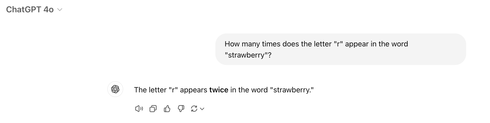
</div></script></section><section data-markdown><script type="text/template"><!-- .slide: class="drop" -->
<div class="" style="position: absolute; left: 0px; top: 0px; height: 900px; width: 1440px; min-height: 900px; display: flex; flex-direction: column; align-items: center; justify-content: center" absolute="true">

### LLMs Not a human brain

**Why this happens:**
- LLMs work with tokens, not individual letters
- "Strawberry" might be tokenized as ["str", "awb", "erry"] 
- The model doesn't "see" individual letters clearly

**How to solve:**
- Use Chain-of-Thought prompting: "Let's count letter by letter"
- Ask model to spell out the word first
- Use structured approaches for counting tasks
</div></script></section><section data-markdown><script type="text/template"><!-- .slide: class="drop" -->
<div class="" style="position: absolute; left: 0px; top: 0px; height: 900px; width: 1440px; min-height: 900px; display: flex; flex-direction: column; align-items: center; justify-content: center" absolute="true">

### LLMs Not a human brain

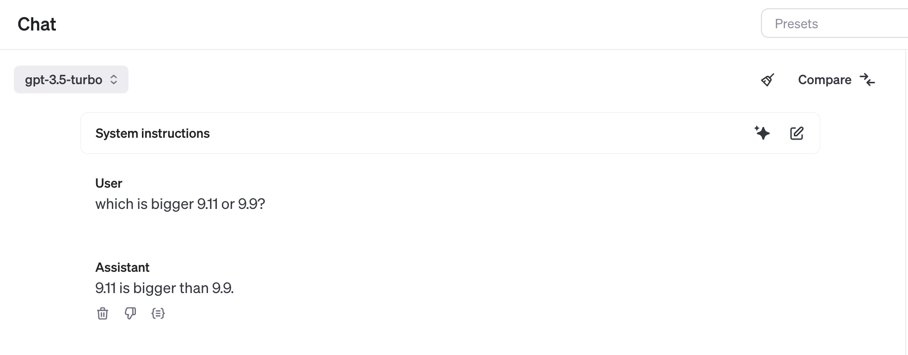
</div>

<aside class="notes"><p>TODO: why did it happen and how to solve this problem?</p>
</aside></script></section><section data-markdown><script type="text/template"><!-- .slide: class="drop" -->
<div class="" style="position: absolute; left: 0px; top: 0px; height: 900px; width: 1440px; min-height: 900px; display: flex; flex-direction: column; align-items: center; justify-content: center" absolute="true">

<div class="" style="position: absolute; left: 0%; top: 0%; height: 50%; width: 100%; display: flex; flex-direction: column; align-items: center; justify-content: center" >


### Prompt Engineering Basics

**System Message**: Sets the AI's role and behavior
```txt
You are a helpful coding assistant. Always explain your solutions.
```

**User Message**: Your actual request
```txt
Write a Python function to calculate fibonacci numbers
```
</div>

<div class="flex-even" style="position: absolute; left: 0%; top: 50%; height: 50%; width: 100%; display: flex; flex-direction: row; align-items: center; justify-content: center" >


<div class="block">

<!-- .element: class="fragment" data-fragment-index="1" -->
**Good Prompts**:
- Be specific and clear
- Provide context and examples
- Use step-by-step instructions
</div>


<div class="block">

<!-- .element: class="fragment" data-fragment-index="2" -->
**Bad Prompts**:
- Vague requests: "Make it better"
- No context: "Fix this code"
- Conflicting instructions
</div>


</div>
</div></script></section></section><section ><section data-markdown><script type="text/template"><!-- .slide: class="drop" -->
<div class="" style="position: absolute; left: 0px; top: 0px; height: 900px; width: 1440px; min-height: 900px; display: flex; flex-direction: column; align-items: center; justify-content: center" absolute="true">

### Open AI

> OpenAI is an American artificial intelligence research organization founded in December 2015. CEO: Sam Altman.


OpenAI is not only about ChatGPT. It's much more!
</div></script></section><section data-markdown><script type="text/template"><!-- .slide: class="drop" -->
<div class="" style="position: absolute; left: 0px; top: 0px; height: 900px; width: 1440px; min-height: 900px; display: flex; flex-direction: column; align-items: center; justify-content: center" absolute="true">

### Open AI Models


</div>

<aside class="notes"><p>TODO: update this slide</p>
</aside></script></section><section data-markdown><script type="text/template"><!-- .slide: class="drop" -->
<div class="" style="position: absolute; left: 0px; top: 0px; height: 900px; width: 1440px; min-height: 900px; display: flex; flex-direction: column; align-items: center; justify-content: center" absolute="true">

### Open AI playground

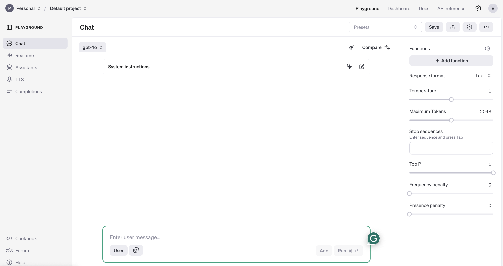
</div>

<aside class="notes"><p>text to image prompt: Fantasy forest at sunset, sun rays filtering through the trees, mystical atmosphere, ancient temple ruins covered with vines, small fireflies around, calm and mysterious mood, warm color palette with golden, green, and brown tones</p>
</aside></script></section></section><section ><section data-markdown><script type="text/template"><!-- .slide: class="drop" -->
<div class="" style="position: absolute; left: 0px; top: 0px; height: 900px; width: 1440px; min-height: 900px; display: flex; flex-direction: column; align-items: center; justify-content: center" absolute="true">

### Local LLMs. Ollama from Meta (Facebook)

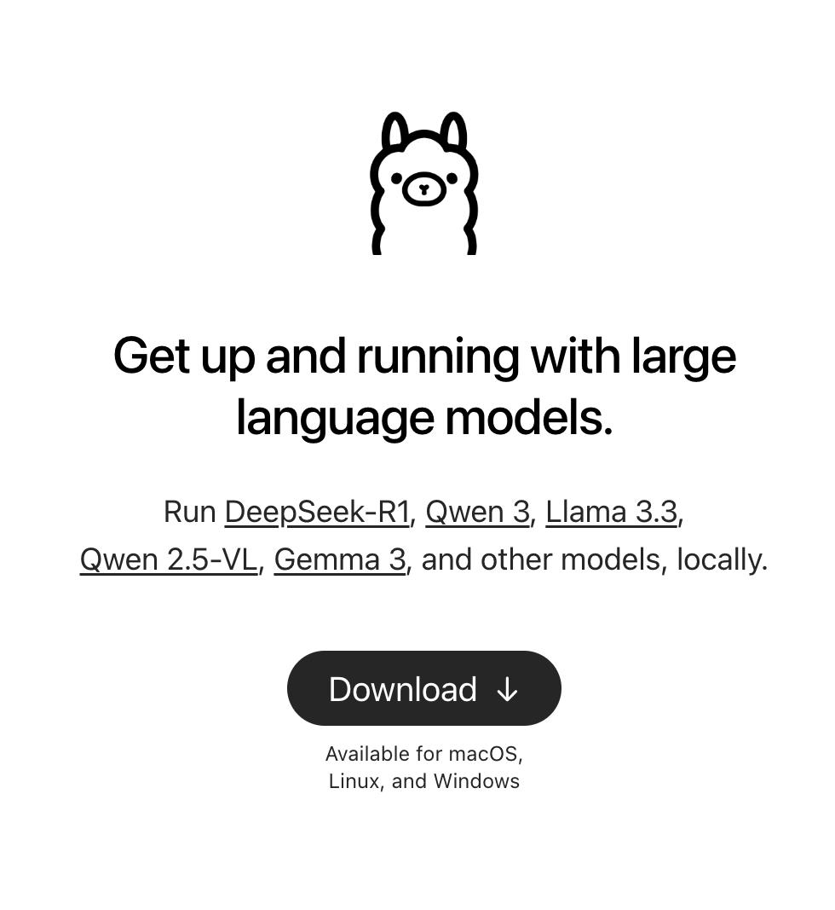


[ollama.com](https://ollama.com)
</div>

<aside class="notes"><p>TODO: download &quot;ollama&quot; and run it in terminal</p>
</aside></script></section><section data-markdown><script type="text/template"><!-- .slide: class="drop" -->
<div class="" style="position: absolute; left: 0px; top: 0px; height: 900px; width: 1440px; min-height: 900px; display: flex; flex-direction: column; align-items: center; justify-content: center" absolute="true">

### Llama models

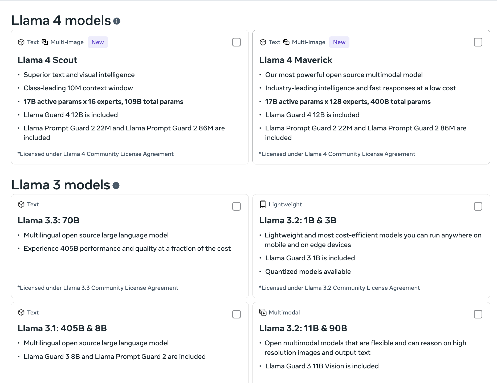


https://www.llama.com/llama-downloads
</div></script></section><section data-markdown><script type="text/template"><!-- .slide: class="drop" -->
<div class="" style="position: absolute; left: 0px; top: 0px; height: 900px; width: 1440px; min-height: 900px; display: flex; flex-direction: column; align-items: center; justify-content: center" absolute="true">

### ELEKS AI Policy

[ELEKS Artificial Intelligence Usage](https://elekscloud.sharepoint.com/sites/GenAI/SitePages/Eleks-GenAI-Tools.aspx)


</div></script></section><section data-markdown><script type="text/template"><!-- .slide: class="drop" -->
<div class="" style="position: absolute; left: 0px; top: 0px; height: 900px; width: 1440px; min-height: 900px; display: flex; flex-direction: column; align-items: center; justify-content: center" absolute="true">

<div class="" style="position: absolute; left: 0%; top: 0%; height: 20%; width: 100%; display: flex; flex-direction: column; align-items: center; justify-content: center" >

 ### ELEKS AI Policy 
</div>

<div class="flex-even" style="position: absolute; left: 0%; top: 20%; height: 80%; width: 100%; display: flex; flex-direction: row; align-items: center; justify-content: center" >

<div class="block">

**✅ Approved Tools:**
- GitHub Copilot (Enterprise)
- OpenAI ChatGPT (Enterprise)
- Claude (Enterprise)
- Local LLMs (Ollama, LM Studio)
</div>


<div class="block">

**❌ Prohibited Tools:**
- OpenAI ChatGPT (Free version)
- Google Gemini (Free version)
- Read.ai
- Mistral-Large-Instruct (Free)
</div>


</div>
</div></script></section><section data-markdown><script type="text/template"><!-- .slide: class="drop" -->
<div class="" style="position: absolute; left: 0px; top: 0px; height: 900px; width: 1440px; min-height: 900px; display: flex; flex-direction: column; align-items: center; justify-content: center" absolute="true">

### Aug 2025 ​15 approved tools ​

<split gap="2" even style="font-size: 1.8rem">

<div class="block">

**Development Tools​**

- GitHub Copilot for Business​
- Сursor Teams​
- **Windsurf**​
</div>


<div class="block">

**Local LLMs​**

- Meta-Llama​
- Microsoft/Phi-3​
- Google/gemma-7b Development ​
- CodeQwen (under Apache or Tongyi Qianwen licenses only) ​
</div>


<div class="block">

**Text-based Tools​**

- Microsoft Copilot for Microsoft 365​
- OpenAI ChatGPT (Teams, Enterprise)​
- Anthropic AI Claude (Team, Enterprise)​
- Bing AI (Copilot)​
- **Grammarly AI​**
- Adobe Firefly (specific terms apply)​
- Canva (Pro and Enterprise are encouraged)​
</div>


</split>
</div></script></section><section data-markdown><script type="text/template"><!-- .slide: class="drop" -->
<div class="" style="position: absolute; left: 0px; top: 0px; height: 900px; width: 1440px; min-height: 900px; display: flex; flex-direction: column; align-items: center; justify-content: center" absolute="true">

### LM Studio


https://lmstudio.ai
</div></script></section><section data-markdown><script type="text/template"><!-- .slide: class="drop" -->
<div class="" style="position: absolute; left: 0px; top: 0px; height: 900px; width: 1440px; min-height: 900px; display: flex; flex-direction: column; align-items: center; justify-content: center" absolute="true">

### LM Studio


</div></script></section></section><section  data-markdown><script type="text/template"><!-- .slide: class="drop" -->
<div class="" style="position: absolute; left: 0px; top: 0px; height: 900px; width: 1440px; min-height: 900px; display: flex; flex-direction: column; align-items: center; justify-content: center" absolute="true">

### Q&A Session


</div>

<aside class="notes"><p><a href="https://github.com/xuro-langchain/eli5">https://github.com/xuro-langchain/eli5</a></p>
</aside></script></section></div>
    </div>

    <script src="dist/reveal.js"></script>

    <script src="plugin/markdown/markdown.js"></script>
    <script src="plugin/highlight/highlight.js"></script>
    <script src="plugin/zoom/zoom.js"></script>
    <script src="plugin/notes/notes.js"></script>
    <script src="plugin/math/math.js"></script>
	<script src="plugin/mermaid/mermaid.js"></script>
	<script src="plugin/chart/chart.min.js"></script>
	<script src="plugin/chart/plugin.js"></script>
	<script src="plugin/menu/menu.js"></script>
	<script src="plugin/customcontrols/plugin.js"></script>
	<script src="plugin/chalkboard/plugin.js"></script>
	<script src="plugin/reveal-pointer/pointer.js"></script>
	<script src="plugin/elapsed-time-bar/elapsed-time-bar.js"></script>

    <script>
      function extend() {
        var target = {};
        for (var i = 0; i < arguments.length; i++) {
          var source = arguments[i];
          for (var key in source) {
            if (source.hasOwnProperty(key)) {
              target[key] = source[key];
            }
          }
        }
        return target;
      }

	  function isLight(color) {
		let hex = color.replace('#', '');

		// convert #fff => #ffffff
		if(hex.length == 3){
			hex = `${hex[0]}${hex[0]}${hex[1]}${hex[1]}${hex[2]}${hex[2]}`;
		}

		const c_r = parseInt(hex.substr(0, 2), 16);
		const c_g = parseInt(hex.substr(2, 2), 16);
		const c_b = parseInt(hex.substr(4, 2), 16);
		const brightness = ((c_r * 299) + (c_g * 587) + (c_b * 114)) / 1000;
		return brightness > 155;
	}

	var bgColor = getComputedStyle(document.documentElement).getPropertyValue('--r-background-color').trim();
	var isLight = isLight(bgColor);

	if(isLight){
		document.body.classList.add('has-light-background');
	} else {
		document.body.classList.add('has-dark-background');
	}

      // default options to init reveal.js
      var defaultOptions = {
        controls: true,
        progress: true,
        history: true,
        center: true,
        transition: 'default', // none/fade/slide/convex/concave/zoom
        plugins: [
          RevealMarkdown,
          RevealHighlight,
          RevealZoom,
          RevealNotes,
          RevealMath.MathJax3,
		  RevealMermaid,
		  RevealChart,
		  RevealCustomControls,
		  RevealMenu,
	      RevealPointer,
		  RevealChalkboard, 
		  ElapsedTimeBar
        ],


    	allottedTime: 120 * 1000,

		mathjax3: {
			mathjax: 'plugin/math/mathjax/tex-mml-chtml.js',
		},
		markdown: {
		  gfm: true,
		  mangle: true,
		  pedantic: false,
		  smartLists: false,
		  smartypants: false,
		},

		mermaid: {
			theme: isLight ? 'default' : 'dark',
		},

		customcontrols: {
			controls: [
				{ icon: '<i class="fa fa-pen-square"></i>',
				title: 'Toggle chalkboard (B)',
				action: 'RevealChalkboard.toggleChalkboard();'
				},
				{ icon: '<i class="fa fa-pen"></i>',
				title: 'Toggle notes canvas (C)',
				action: 'RevealChalkboard.toggleNotesCanvas();'
				},
			]
		},
		menu: {
			loadIcons: false
		}
      };

      // options from URL query string
      var queryOptions = Reveal().getQueryHash() || {};

      var options = extend(defaultOptions, {"width":1440,"height":900,"margin":0,"controls":true,"progress":true,"slideNumber":true,"transition":"slide","transitionSpeed":"default"}, queryOptions);
    </script>

    <script>
      Reveal.initialize(options);
    </script>
  </body>

  <!-- created with Advanced Slides -->
</html>
